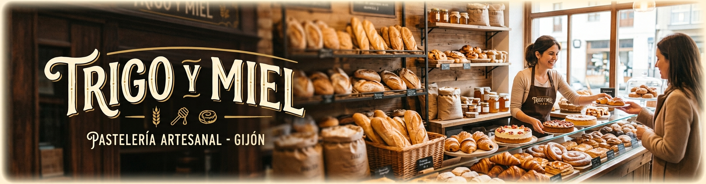
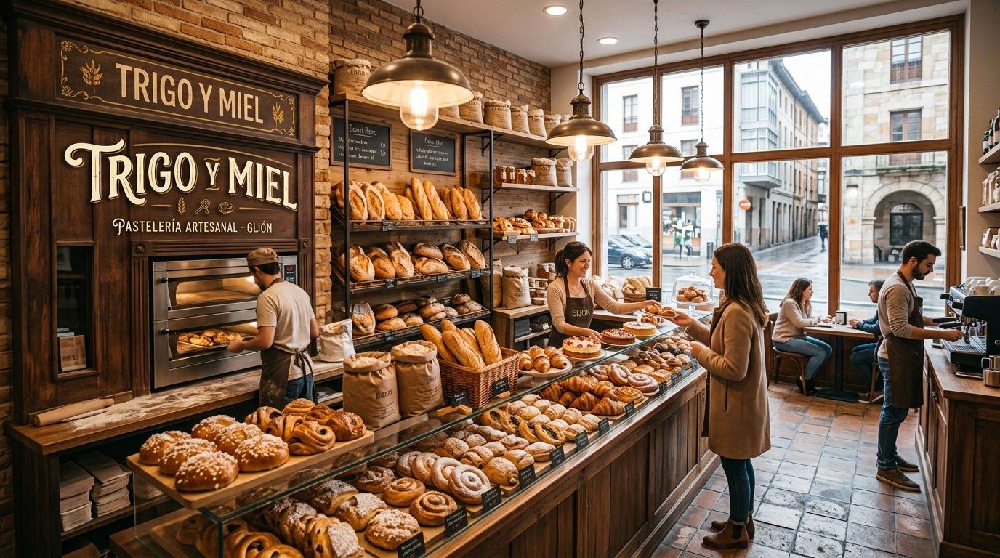

Cada pieza que sale de nuestros obrador ha dermentado, al menos dieciocho horas. Sin atajos, sin aditivos: solo harina, agua, sal.

El obrador de Trigo y Miel, en el centro de GijónCultivamos nuestra propia masa madre desde 2016; nunca hemos usado levadura industrial
Harina de molinos asturianos y fruta de temporada de productores de la región
Horneamos en un horno de piedra centenario, heredado del obrador original